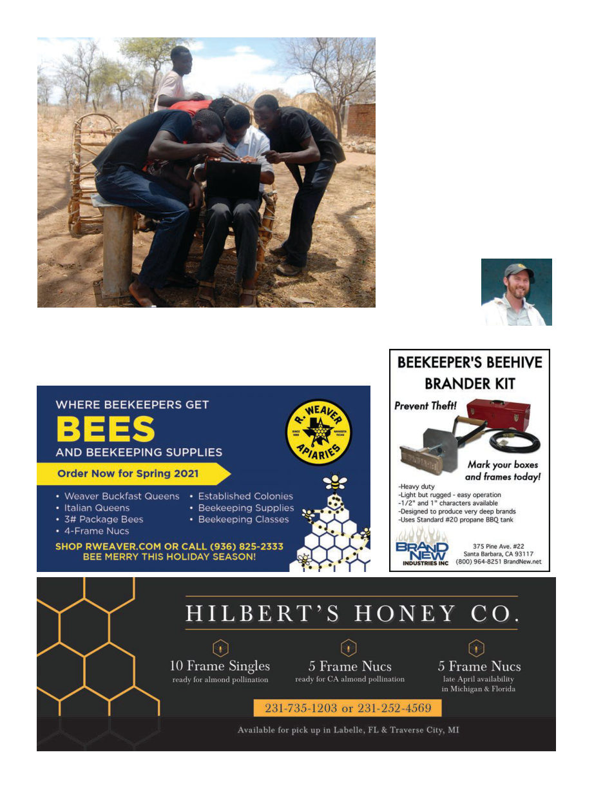

American Bee Journal
100
Kris Fricke is the “bee-
keeper-in-chief” of Bee
Aid International, www.
beedev.org, and also
runs Great Ocean Road
Honey Company in Vic-
toria, Australia.
money for PPE for Venezuelan doc-
tors, and it is accruing donations at a
much, much better pace.
Maasai Honey has been going
strong, but with 80% of their sales
depending on tourism they are now
Young Hadzabe men looking at beekeeping pictures on my laptop. I think their home-
made chairs are very admirable.
depending on donations to survive
until this blows over. I encourage you
to look at their excellent webpage
(www.maasaihoney.org) and con-
sider donating to support this valu-
able organization.
In general, I think everyone should
visit Africa at least once in their life
and the region of northern Tanzania
has some of the best tourism infra-
structure. When the world opens up
again, you should consider a visit. I
can recommend the tourism com-
pany operated by enthusiastic bee-
keeper Simon Mtuy (https://www.
nomadicexperience.com/), who can
organize some amazing experiences
for you as well as some meetings
with beekeepers.